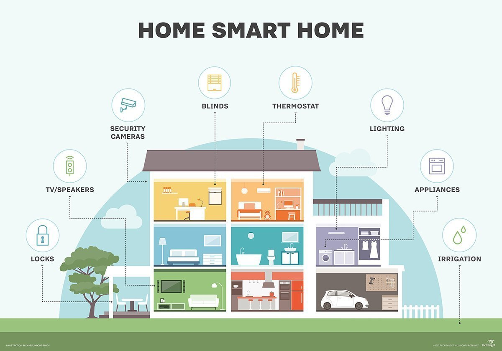

Smart homes made the life more easier.
You can easily switch on air conditioning, switch off the light
and even open or unlock the doors when you're outside your home.
Connected cars are modern vehicles that can optimize its own
operations using onboard sensors and internet connectivity.